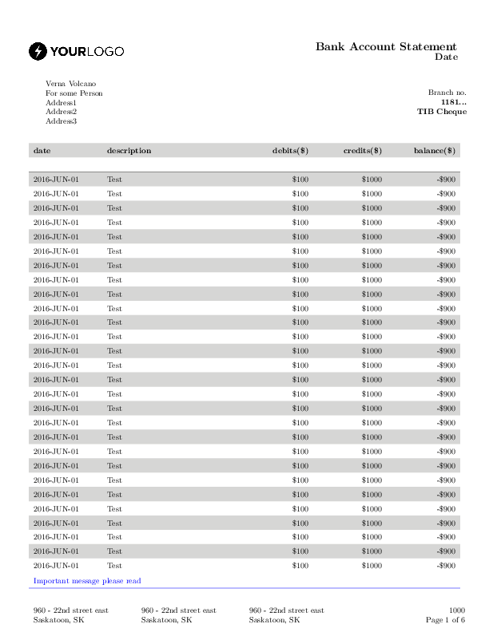
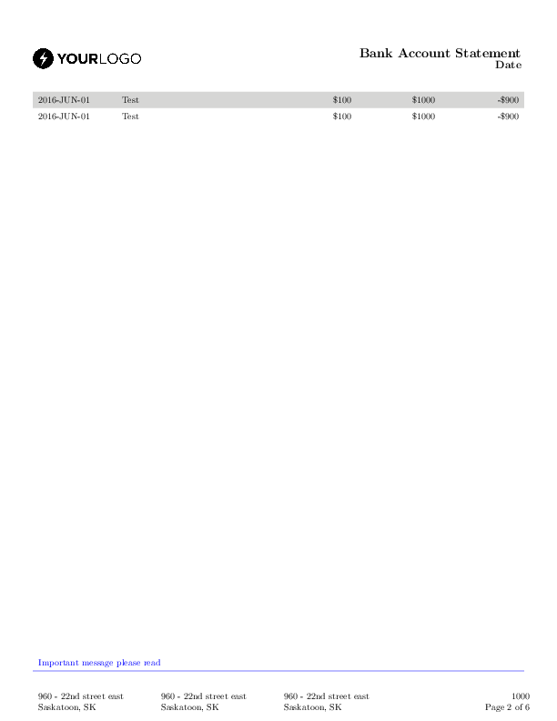
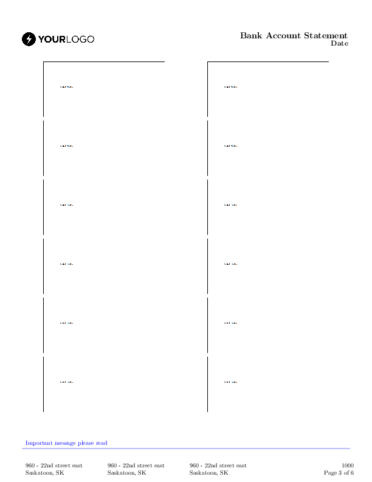
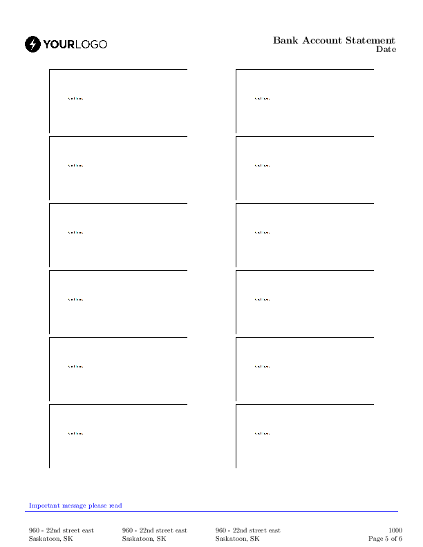
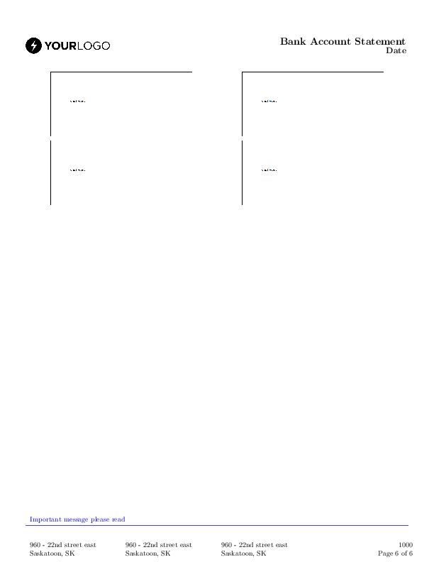

Complex report example¶
This example shows the functionality of the PyLaTeX library.
It creates a sample report with 2 tables, one containing images and the other containing data. It also creates a complex header with an image.
The code¶
import os
from pylatex import Document, PageStyle, Head, Foot, MiniPage, \
StandAloneGraphic, MultiColumn, Tabu, LongTabu, LargeText, MediumText, \
LineBreak, NewPage, Tabularx, TextColor, simple_page_number
from pylatex.utils import bold, NoEscape
def generate_unique():
geometry_options = {
"head": "40pt",
"margin": "0.5in",
"bottom": "0.6in",
"includeheadfoot": True
}
doc = Document(geometry_options=geometry_options)
# Generating first page style
first_page = PageStyle("firstpage")
# Header image
with first_page.create(Head("L")) as header_left:
with header_left.create(MiniPage(width=NoEscape(r"0.49\textwidth"),
pos='c')) as logo_wrapper:
logo_file = os.path.join(os.path.dirname(__file__),
'sample-logo.png')
logo_wrapper.append(StandAloneGraphic(image_options="width=120px",
filename=logo_file))
# Add document title
with first_page.create(Head("R")) as right_header:
with right_header.create(MiniPage(width=NoEscape(r"0.49\textwidth"),
pos='c', align='r')) as title_wrapper:
title_wrapper.append(LargeText(bold("Bank Account Statement")))
title_wrapper.append(LineBreak())
title_wrapper.append(MediumText(bold("Date")))
# Add footer
with first_page.create(Foot("C")) as footer:
message = "Important message please read"
with footer.create(Tabularx(
"X X X X",
width_argument=NoEscape(r"\textwidth"))) as footer_table:
footer_table.add_row(
[MultiColumn(4, align='l', data=TextColor("blue", message))])
footer_table.add_hline(color="blue")
footer_table.add_empty_row()
branch_address = MiniPage(
width=NoEscape(r"0.25\textwidth"),
pos='t')
branch_address.append("960 - 22nd street east")
branch_address.append("\n")
branch_address.append("Saskatoon, SK")
document_details = MiniPage(width=NoEscape(r"0.25\textwidth"),
pos='t', align='r')
document_details.append("1000")
document_details.append(LineBreak())
document_details.append(simple_page_number())
footer_table.add_row([branch_address, branch_address,
branch_address, document_details])
doc.preamble.append(first_page)
# End first page style
# Add customer information
with doc.create(Tabu("X[l] X[r]")) as first_page_table:
customer = MiniPage(width=NoEscape(r"0.49\textwidth"), pos='h')
customer.append("Verna Volcano")
customer.append("\n")
customer.append("For some Person")
customer.append("\n")
customer.append("Address1")
customer.append("\n")
customer.append("Address2")
customer.append("\n")
customer.append("Address3")
# Add branch information
branch = MiniPage(width=NoEscape(r"0.49\textwidth"), pos='t!',
align='r')
branch.append("Branch no.")
branch.append(LineBreak())
branch.append(bold("1181..."))
branch.append(LineBreak())
branch.append(bold("TIB Cheque"))
first_page_table.add_row([customer, branch])
first_page_table.add_empty_row()
doc.change_document_style("firstpage")
doc.add_color(name="lightgray", model="gray", description="0.80")
# Add statement table
with doc.create(LongTabu("X[l] X[2l] X[r] X[r] X[r]",
row_height=1.5)) as data_table:
data_table.add_row(["date",
"description",
"debits($)",
"credits($)",
"balance($)"],
mapper=bold,
color="lightgray")
data_table.add_empty_row()
data_table.add_hline()
row = ["2016-JUN-01", "Test", "$100", "$1000", "-$900"]
for i in range(30):
if (i % 2) == 0:
data_table.add_row(row, color="lightgray")
else:
data_table.add_row(row)
doc.append(NewPage())
# Add cheque images
with doc.create(LongTabu("X[c] X[c]")) as cheque_table:
cheque_file = os.path.join(os.path.dirname(__file__),
'chequeexample.png')
cheque = StandAloneGraphic(cheque_file, image_options="width=200px")
for i in range(0, 20):
cheque_table.add_row([cheque, cheque])
doc.generate_pdf("complex_report", clean_tex=False)
generate_unique()
The generated files¶
complex_report.tex¶
1 2 3 4 5 6 7 8 9 10 11 12 13 14 15 16 17 18 19 20 21 22 23 24 25 26 27 28 29 30 31 32 33 34 35 36 37 38 39 40 41 42 43 44 45 46 47 48 49 50 51 52 53 54 55 56 57 58 59 60 61 62 63 64 65 66 67 68 69 70 71 72 73 74 75 76 77 78 79 80 81 82 83 84 85 86 87 88 89 90 91 92 93 94 95 96 97 98 99 100 101 102 103 104 105 106 107 108 109 110 111 112 113 114 115 116 117 118 119 120 121 122 123 124 125 126 127 128 129 130 131 132 133 134 135 136 137 138 139 140 141 142 143 144 145 146 147 148 149 150 151 152 153 154 155 156 157 158 159 160 161 162 163 164 165 166 167 168 169 170 171 172 173 174 175 176 177 178 | \documentclass{article}%
\usepackage[T1]{fontenc}%
\usepackage[utf8]{inputenc}%
\usepackage{lmodern}%
\usepackage{textcomp}%
\usepackage{lastpage}%
\usepackage[head=40pt,margin=0.5in,bottom=0.6in,includeheadfoot=True]{geometry}%
\usepackage{color}%
\usepackage{tabu}%
\usepackage{ragged2e}%
\usepackage{longtable}%
\usepackage[table]{xcolor}%
\usepackage{graphicx}%
\usepackage{fancyhdr}%
\usepackage{tabularx}%
%
\fancypagestyle{firstpage}{
\renewcommand{\headrulewidth}{0pt}%
\renewcommand{\footrulewidth}{0pt}%
\fancyhead{
}%
\fancyfoot{
}%
\fancyhead[L]{
\begin{minipage}[c]{0.49\textwidth}%
\includegraphics[width=120px]{../../../../examples/sample-logo.png}%
\end{minipage}
}%
\fancyhead[R]{
\begin{minipage}[c]{0.49\textwidth}%
\flushright%
\begin{Large}%
\textbf{Bank Account Statement}%
\end{Large}%
\linebreak%
\begin{large}%
\textbf{Date}%
\end{large}%
\end{minipage}
}%
\fancyfoot[C]{
\begin{tabularx}{\textwidth}{X X X X}%
\multicolumn{4}{l}{\textcolor{blue}{
Important message please read
}}\\%
\arrayrulecolor{blue}%
\hline%
&&&\\%
\begin{minipage}[t]{0.25\textwidth}%
960 {-} 22nd street east%
\newline%
%
Saskatoon, SK%
\end{minipage}&\begin{minipage}[t]{0.25\textwidth}%
960 {-} 22nd street east%
\newline%
%
Saskatoon, SK%
\end{minipage}&\begin{minipage}[t]{0.25\textwidth}%
960 {-} 22nd street east%
\newline%
%
Saskatoon, SK%
\end{minipage}&\begin{minipage}[t]{0.25\textwidth}%
\flushright%
1000%
\linebreak%
Page \thepage\ of \pageref{LastPage}%
\end{minipage}\\%
\end{tabularx}
}
}%
\definecolor{lightgray}{gray}{0.80}%
%
\begin{document}%
\normalsize%
\begin{tabu}{X[l] X[r]}%
\begin{minipage}[h]{0.49\textwidth}%
Verna Volcano%
\newline%
%
For some Person%
\newline%
%
Address1%
\newline%
%
Address2%
\newline%
%
Address3%
\end{minipage}&\begin{minipage}[t!]{0.49\textwidth}%
\flushright%
Branch no.%
\linebreak%
\textbf{1181...}%
\linebreak%
\textbf{TIB Cheque}%
\end{minipage}\\%
&\\%
\end{tabu}%
\pagestyle{firstpage}%
\renewcommand{\arraystretch}{1.5}%
\begin{longtabu}{X[l] X[2l] X[r] X[r] X[r]}%
\rowcolor{lightgray}%
\textbf{date}&\textbf{description}&\textbf{debits(\$)}&\textbf{credits(\$)}&\textbf{balance(\$)}\\%
&&&&\\%
\hline%
\rowcolor{lightgray}%
2016{-}JUN{-}01&Test&\$100&\$1000&{-}\$900\\%
2016{-}JUN{-}01&Test&\$100&\$1000&{-}\$900\\%
\rowcolor{lightgray}%
2016{-}JUN{-}01&Test&\$100&\$1000&{-}\$900\\%
2016{-}JUN{-}01&Test&\$100&\$1000&{-}\$900\\%
\rowcolor{lightgray}%
2016{-}JUN{-}01&Test&\$100&\$1000&{-}\$900\\%
2016{-}JUN{-}01&Test&\$100&\$1000&{-}\$900\\%
\rowcolor{lightgray}%
2016{-}JUN{-}01&Test&\$100&\$1000&{-}\$900\\%
2016{-}JUN{-}01&Test&\$100&\$1000&{-}\$900\\%
\rowcolor{lightgray}%
2016{-}JUN{-}01&Test&\$100&\$1000&{-}\$900\\%
2016{-}JUN{-}01&Test&\$100&\$1000&{-}\$900\\%
\rowcolor{lightgray}%
2016{-}JUN{-}01&Test&\$100&\$1000&{-}\$900\\%
2016{-}JUN{-}01&Test&\$100&\$1000&{-}\$900\\%
\rowcolor{lightgray}%
2016{-}JUN{-}01&Test&\$100&\$1000&{-}\$900\\%
2016{-}JUN{-}01&Test&\$100&\$1000&{-}\$900\\%
\rowcolor{lightgray}%
2016{-}JUN{-}01&Test&\$100&\$1000&{-}\$900\\%
2016{-}JUN{-}01&Test&\$100&\$1000&{-}\$900\\%
\rowcolor{lightgray}%
2016{-}JUN{-}01&Test&\$100&\$1000&{-}\$900\\%
2016{-}JUN{-}01&Test&\$100&\$1000&{-}\$900\\%
\rowcolor{lightgray}%
2016{-}JUN{-}01&Test&\$100&\$1000&{-}\$900\\%
2016{-}JUN{-}01&Test&\$100&\$1000&{-}\$900\\%
\rowcolor{lightgray}%
2016{-}JUN{-}01&Test&\$100&\$1000&{-}\$900\\%
2016{-}JUN{-}01&Test&\$100&\$1000&{-}\$900\\%
\rowcolor{lightgray}%
2016{-}JUN{-}01&Test&\$100&\$1000&{-}\$900\\%
2016{-}JUN{-}01&Test&\$100&\$1000&{-}\$900\\%
\rowcolor{lightgray}%
2016{-}JUN{-}01&Test&\$100&\$1000&{-}\$900\\%
2016{-}JUN{-}01&Test&\$100&\$1000&{-}\$900\\%
\rowcolor{lightgray}%
2016{-}JUN{-}01&Test&\$100&\$1000&{-}\$900\\%
2016{-}JUN{-}01&Test&\$100&\$1000&{-}\$900\\%
\rowcolor{lightgray}%
2016{-}JUN{-}01&Test&\$100&\$1000&{-}\$900\\%
2016{-}JUN{-}01&Test&\$100&\$1000&{-}\$900\\%
\end{longtabu}%
\newpage%
\begin{longtabu}{X[c] X[c]}%
\includegraphics[width=200px]{../../../../examples/chequeexample.png}&\includegraphics[width=200px]{../../../../examples/chequeexample.png}\\%
\includegraphics[width=200px]{../../../../examples/chequeexample.png}&\includegraphics[width=200px]{../../../../examples/chequeexample.png}\\%
\includegraphics[width=200px]{../../../../examples/chequeexample.png}&\includegraphics[width=200px]{../../../../examples/chequeexample.png}\\%
\includegraphics[width=200px]{../../../../examples/chequeexample.png}&\includegraphics[width=200px]{../../../../examples/chequeexample.png}\\%
\includegraphics[width=200px]{../../../../examples/chequeexample.png}&\includegraphics[width=200px]{../../../../examples/chequeexample.png}\\%
\includegraphics[width=200px]{../../../../examples/chequeexample.png}&\includegraphics[width=200px]{../../../../examples/chequeexample.png}\\%
\includegraphics[width=200px]{../../../../examples/chequeexample.png}&\includegraphics[width=200px]{../../../../examples/chequeexample.png}\\%
\includegraphics[width=200px]{../../../../examples/chequeexample.png}&\includegraphics[width=200px]{../../../../examples/chequeexample.png}\\%
\includegraphics[width=200px]{../../../../examples/chequeexample.png}&\includegraphics[width=200px]{../../../../examples/chequeexample.png}\\%
\includegraphics[width=200px]{../../../../examples/chequeexample.png}&\includegraphics[width=200px]{../../../../examples/chequeexample.png}\\%
\includegraphics[width=200px]{../../../../examples/chequeexample.png}&\includegraphics[width=200px]{../../../../examples/chequeexample.png}\\%
\includegraphics[width=200px]{../../../../examples/chequeexample.png}&\includegraphics[width=200px]{../../../../examples/chequeexample.png}\\%
\includegraphics[width=200px]{../../../../examples/chequeexample.png}&\includegraphics[width=200px]{../../../../examples/chequeexample.png}\\%
\includegraphics[width=200px]{../../../../examples/chequeexample.png}&\includegraphics[width=200px]{../../../../examples/chequeexample.png}\\%
\includegraphics[width=200px]{../../../../examples/chequeexample.png}&\includegraphics[width=200px]{../../../../examples/chequeexample.png}\\%
\includegraphics[width=200px]{../../../../examples/chequeexample.png}&\includegraphics[width=200px]{../../../../examples/chequeexample.png}\\%
\includegraphics[width=200px]{../../../../examples/chequeexample.png}&\includegraphics[width=200px]{../../../../examples/chequeexample.png}\\%
\includegraphics[width=200px]{../../../../examples/chequeexample.png}&\includegraphics[width=200px]{../../../../examples/chequeexample.png}\\%
\includegraphics[width=200px]{../../../../examples/chequeexample.png}&\includegraphics[width=200px]{../../../../examples/chequeexample.png}\\%
\includegraphics[width=200px]{../../../../examples/chequeexample.png}&\includegraphics[width=200px]{../../../../examples/chequeexample.png}\\%
\end{longtabu}%
\end{document}
|
complex_report.pdf




